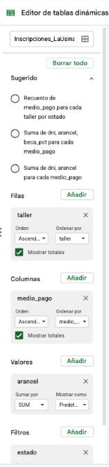

Por qué una tabla dinámica y no más fórmulas
Te piden el importe por taller y por mes, todo cruzado. Con SUMAR.SI necesitás una fórmula por cada combinación: con ocho talleres y cuatro meses ya son treinta y dos, y ninguna de esas fórmulas admite una segunda condición sin volverse más compleja. ¿Y si mañana quieren verlo por medio de pago, o por sede?
De dónde venimos
Durante tres clases construiste, sobre las inscripciones de La Usina, un archivo que ya hace bastante:
| Clase | Qué sumó al archivo |
|---|---|
| 08 | Hoja DATOS con las 336 inscripciones importadas, importes calculados, PARAMETROS con el costo administrativo, panel RESUMEN y formato condicional que señala anomalías |
| 09 | Columna situacion que clasifica sola, los tres números del total, subtotales por sede y por taller con SUMAR.SI y CONTAR.SI, hoja LISTAS y validación de la carga |
| 10 | Hojas TALLERES y DOCENTES como fuente única de valores, columnas traídas con BUSCARV y BUSCARX, fechas, y los gráficos de la reunión |
Hacé una copia con Archivo → Hacer una copia y nombrala 2026-XX-XX_Informatica_Clase11_V01.
💡 Consejo: Si no tenés el archivo a mano
Si no tenés el archivo a mano, el punto de partida es el de la Clase 10, con DATOS hasta la columna AA. También podés trabajar con cualquier tabla propia de al menos ocho filas que tenga dos campos de texto para agrupar (un área y una categoría), una fecha y un importe: todo lo de hoy funciona igual.
⚠️ Atención
Si en algún punto de esta clase no te sale una fórmula compleja, no la abandones: es exactamente lo que se resuelve más abajo pidiéndole ayuda a una IA. Anotá dónde te trabaste, ese apunte es la materia prima de la Actividad 6.
Qué resuelve una tabla dinámica
Con SUMAR.SI y CONTAR.SI podés responder una pregunta condicional por vez. Cuando la pregunta tiene varias dimensiones cruzadas, armar eso a mano se vuelve una tabla de fórmulas dentro de otra tabla, y cada vez que alguien quiere verlo de otra forma hay que rehacerla.
Una tabla dinámica resuelve exactamente ese problema: agrupa y resume un conjunto de datos eligiendo qué campo va en cada área, sin escribir una sola fórmula. Cambiar la pregunta ("ahora quiero por medio de pago, no por mes") es elegir otro campo.
💡 Consejo
Una tabla dinámica necesita datos prolijos: una fila por registro, una columna por variable, sin filas ni columnas vacías en el medio, y con encabezados claros en la primera fila. Tu hoja DATOS ya cumple con eso, no por casualidad, sino porque se construyó así desde el primer día. Esa es una de las razones por las que se insistió tanto con la estructura.
El encargo de esta semana
El gráfico funcionó en la reunión. Pero la coordinación quiere dejar de depender de vos para cada pregunta nueva.
El gráfico funcionó muy bien en la reunión. Salieron preguntas que no supe contestar y que necesito poder responder sin llamarte:
- Cuánto aporta cada taller en cada mes, cruzado. Y poder cambiar el corte (a veces quiero por medio de pago, a veces por sede) sin que nadie edite nada.
- Un control que me deje filtrar con un clic. Cuando entro al archivo no sé dónde tocar y tengo miedo de romper algo.
- Una cuenta que te pido específica: qué porcentaje del total aporta el taller más grande. Ahí quiero un número, no un gráfico.
- Y para el comité: quiero poder imprimir el listado de inscripciones a revisar y el tablero, que salgan prolijos en papel.
Con esto cerramos. Gracias.
Qué te está pidiendo realmente
| Lo que dice el pedido | Lo que hay que hacer | Herramienta de esta clase |
|---|---|---|
| "Cada taller en cada mes, cruzado" | Resumir dos dimensiones a la vez, sin una fórmula por celda | Tabla dinámica |
| "Cambiar el corte sin que nadie edite nada" | Que reconfigurar el análisis sea arrastrar, no reescribir | Áreas de Filas / Columnas / Valores |
| "Un control para filtrar con un clic" | Dar acceso a la exploración sin dar acceso a la configuración | Segmentación de datos y filtros |
| "Tengo miedo de romper algo" | Separar la vista de consulta de la hoja donde se calcula | Tabla dinámica en hoja propia |
| "Qué porcentaje aporta el taller más grande" | Una fórmula que combina un máximo con un total | IA como asistente + verificación |
| "Que salgan prolijos en papel" | Configurar la página antes de imprimir | Configuración de impresión |
Cómo se lee tu tablero
| Área | Campo | Para qué |
|---|---|---|
| Filas | taller_ok | Una fila por taller |
| Columnas | mes | Una columna por mes (3 a 6) |
| Valores | Suma de importe_valido | El importe del cruce |
| Filtros | situacion | Para quedarse solo con las "Válida" cuando se cuente |
| Segmentación | medio_pago y sede_ok | Los controles de un clic |
💡 Consejo: Ya tenés la respuesta para verificar
El total general de la tabla dinámica tiene que dar exactamente el total real de tu panel RESUMEN ($2.696.800), los totales de fila tienen que coincidir con los subtotales por taller y los totales de columna con la evolución mensual que armaste en la clase anterior. Esa triple verificación es lo que te dice si la tabla dinámica está tomando todo el rango o se comió filas.
Cómo armar una tabla dinámica

Editor de tablas dinámicas: cada área tiene su botón "Añadir".
Los cuatro bloques del editor
| Área | Qué hace |
|---|---|
| Filas | Los valores que se agrupan verticalmente, una fila por valor |
| Columnas | Los valores que se agrupan horizontalmente, una columna por valor |
| Valores | El número que se calcula en el cruce de fila y columna |
| Filtros | Un campo que restringe qué datos entran en la tabla, sin mostrarse en ella |
Cómo crearla
- Seleccioná el rango completo de datos, con encabezados.
- Andá a Insertar > Tabla dinámica. Elegí hoja nueva: es lo que separa la vista de consulta de la hoja donde se calcula, y lo que le saca el miedo a quien la abre.
- Se abre el Editor de tablas dinámicas en el panel derecho. Cada área (Filas, Columnas, Valores, Filtros) tiene un botón Añadir: hacé clic y elegí el campo de la lista.
- En el área "Valores", cada campo tiene dos listas: Sumar por, que elige cómo se resume (aparecen con el nombre en inglés:
SUMes suma,COUNTAcuenta valores no vacíos,COUNTcuenta números,AVERAGEpromedio,MAX,MIN), y Mostrar como, que puede convertir el valor en Porcentaje de la fila, de la columna o de la suma total. Son las mismas funciones de siempre, aplicadas sin escribir una sola fórmula.
⚠️ Atención
Por defecto, la planilla suele resumir un campo numérico con SUMA. Si lo que necesitás es un promedio o un conteo, tenés que cambiarlo en la lista "Sumar por" de ese campo dentro del área "Valores". Es un error común dejarlo en SUM sin revisar, y una suma de porcentajes no significa absolutamente nada.
💡 Consejo
Una tabla dinámica agrupa por lo que está escrito: Cerámica y Ceramica serían dos filas distintas. Por eso antes de armarla conviene normalizar los campos que se agrupan. En tu archivo, la columna taller_ok (que vas a crear ahora) toma el nombre canónico desde TALLERES, y sede_ok ya viene de la clase anterior.
Ocho filas, una tabla dinámica
- En una hoja aparte, cargá cuatro columnas (Vendedor, Categoría, Mes, Monto) con estas ocho filas: García/Papelería/Enero/45000 · López/Accesorios/Enero/32000 · García/Accesorios/Febrero/61000 · Pérez/Papelería/Enero/28000 · López/Papelería/Febrero/55000 · García/Papelería/Febrero/19000 · Pérez/Accesorios/Enero/47000 · López/Accesorios/Febrero/38000.
- Insertá una tabla dinámica: vendedor en filas, mes en columnas, suma del monto en valores. El total general tiene que dar 325.000.
- Cambiá el campo de valores de suma a promedio y observá cómo cambian los números sin tocar ninguna fórmula.
- Arrastrá "Categoría" al área de Filtros y mirá la tabla solo con "Papelería" (total 147.000) y solo con "Accesorios" (178.000). Los dos suman el total general.
El cruce que pidió la coordinación
- En
DATOS, agregá la columnataller_ok(laAB) con=BUSCARX(D2; TALLERES!$A$2:$A$9; TALLERES!$A$2:$A$9; "Taller no reconocido"): devuelve el nombre del taller tal como está escrito en el catálogo, y "Taller no reconocido" cuando no existe. Copiala hasta la fila 337. - Insertá una tabla dinámica sobre
DATOS!A1:ABen una hoja nueva y nombralaTABLERO. - Armá el cruce de la tabla de la sección anterior:
taller_oken Filas,mesen Columnas y la suma deimporte_validoen Valores. - Verificación obligatoria: el total general tiene que dar $2.696.800; los totales de fila, los subtotales por taller de
RESUMEN(Cerámica $760.200, Guitarra $300.600, Yoga $397.000...) y el total de "Taller no reconocido", $44.000; y los totales de columna, la evolución mensual de la clase anterior (marzo $745.000, abril $881.800, mayo $877.600, junio $192.400). Si no cierra, el rango de origen no está tomando todas las filas. - Agregá un segundo campo al área de Valores: la suma de
cuenta. Ahora cada cruce te dice cuánto y cuántos. - Agregá
situacional área de Filtros y dejá marcada solo "Válida". Con el filtro puesto podés contar conCONTARAdeid_inscripcion: el total general tiene que dar 248. - Cambiá el campo de Columnas de
mesamedio_pago. Esa vista responde una pregunta distinta: cómo paga cada taller. Anotá qué ves, y volvé a la vista original.
 Actualizá tu LinkedIn
Actualizá tu LinkedIn
Tablas dinámicas (PivotTables). Cómo la justificás: resumo conjuntos de datos de varias dimensiones con tablas dinámicas, eligiendo la función de agregación adecuada a cada pregunta y verificando la reconciliación contra los totales de control antes de informar cifras.
Segmentación de datos y filtros
La coordinación dijo "tengo miedo de romper algo". Si para filtrar tiene que abrir el panel de configuración de la tabla dinámica, ese miedo está perfectamente fundado: el panel de configuración es donde se rompe la tabla. La segmentación de datos (*slicer*, en inglés) es un control visual, parecido a un botón, que permite filtrar haciendo clic, sin tocar esa configuración. Es la diferencia entre dar acceso a la consulta y dar acceso a la estructura.
Cómo aplicarla
- Seleccioná una celda de la tabla dinámica.
- Andá a Datos > Añadir un control de filtros. Google usa ese nombre en español; en inglés se llama *slicer*, y en Excel Segmentación de datos (Insertar > Segmentación de datos).
- En el panel Control de filtros, revisá que el Intervalo de datos sea el mismo rango de origen de la tabla dinámica y elegí en Columna el campo por el que querés poder filtrar.
- Aparece un cuadro flotante con el nombre del campo. Hacer clic en él deja elegir qué valores se muestran, y la tabla dinámica y los gráficos que dependen de esos datos se filtran.
💡 Consejo
La segmentación es la diferencia entre una planilla que solo vos entendés y una que cualquiera puede explorar sin ayuda. Ese es, además, el criterio con el que se evalúa una entrega profesional: no si vos podés usarla, sino si puede usarla la persona que la pidió.
Filtros: la herramienta que ya estaba
Antes de la segmentación, la forma de recortar una vista era el filtro clásico: Datos > Crear un filtro pone una flecha en cada encabezado de columna que deja elegir qué filas mostrar, sin mover ni borrar ninguna. Se puede filtrar de tres maneras:
| Filtrar por... | Ejemplos |
|---|---|
| Valores | Tildar solo "Sede Sur", o solo "Revisar" |
| Condición | Texto: "El texto empieza con", "contiene". Números: "Es mayor que", "Está entre". Fechas: "La fecha es posterior a" |
| Color | Las celdas pintadas por el formato condicional o por relleno |
Se pueden combinar filtros de varias columnas a la vez: la tabla muestra solo las filas que cumplen todas las condiciones. Las filas que no cumplen se ocultan, no se borran: se vuelven a ver desactivando el filtro.
⚠️ Atención
Un gráfico que se arma sobre un rango filtrado, por defecto, no dibuja las filas ocultas. Si lo que querés es que las incluya, el editor de gráficos tiene una opción para incluir u omitir las filas ocultas o filtradas. Conviene revisarla: un gráfico que no acompaña al filtro muestra un número y sugiere otro.
Un control, tres clics
- Sobre la tabla dinámica de la Actividad 01, agregá un control de filtros por "Vendedor".
- Filtrá solo García (125.000), después solo López (125.000), después los dos juntos (250.000).
- Limpiá el filtro y confirmá que vuelve al total general de 325.000.
El tablero que se usa sin ayuda
- Sobre
TABLERO, agregá un control de filtros pormedio_pagoy otro porsede_ok. - Combiná los dos controles: mostrá solo los pagos en Efectivo. Después sumá el filtro de mes. Confirmá que la tabla responde a los dos filtros a la vez. Como referencia, el importe en efectivo del mes de mayo es $312.300.
- Insertá un gráfico a partir de la tabla dinámica y confirmá que también se actualiza al mover los controles. Un gráfico que no acompaña al filtro es peor que no tener gráfico: muestra un número y sugiere otro.
- Acomodá los elementos en la hoja
TABLERO: los controles arriba, la tabla a la izquierda, el gráfico a la derecha. Agregá un título de texto arriba de todo que diga qué es y a qué período corresponde. - La prueba real: pedile a alguien que no vio tu archivo que lo abra y responda una pregunta concreta (por ejemplo, cuánto aportó Yoga en abril). Si necesita que le expliques dónde tocar, el tablero todavía no está terminado.
- Filtros clásicos sobre
DATOS: activá el filtro (Datos → Crear un filtro) y practicá, siempre desactivando cada uno antes del siguiente. Un filtro simple por un valor exacto:situacionigual a "Revisar" (tienen que quedar 8 filas). Dos filtros combinados: "Revisar" ysede_okigual a "Sede Sur". Un filtro por condición:arancelmayor que 14000. Un filtro de texto:tallerque empiece con "C". Un filtro de fecha:fecha_okposterior al 01/05/2026.
Actualizá tu LinkedIn
Análisis de datos (Data Analysis). Cómo la justificás: construyo tableros de consulta con segmentación de datos y gráficos vinculados, de modo que una persona sin conocimiento técnico pueda explorar la información y responder sus propias preguntas sin editar la configuración del archivo.
IA como asistente para fórmulas
Queda pendiente el punto 3 del pedido: qué porcentaje del total aporta el taller más grande. Una IA de propósito general (ChatGPT, Gemini, Claude) puede escribir fórmulas de planilla con bastante precisión, pero solo si le das el contexto necesario. Es la misma lógica de prompting que trabajaste en la Clase 01, aplicada ahora a fórmulas.
Qué contexto darle
| Elemento del prompt | Ejemplo |
|---|---|
| Qué programa usás | "Estoy en Google Sheets, configuración regional Argentina, separador punto y coma" |
| Cómo están organizados los datos | "En la hoja RESUMEN tengo los nombres de los talleres en A41:A48 y el importe de cada uno en B41:B48; el total real está en B5" |
| Qué resultado necesitás | "Quiero el porcentaje que representa el importe más alto sobre el total real" |
| Restricciones | "Una sola celda, sin tabla dinámica, y que se actualice si cambian los datos" |
Errores comunes al usar IA para fórmulas
- Alucina funciones que no existen en tu programa, o mezcla la sintaxis de Excel (con
,) con la de Sheets (con;), sobre todo si no aclaraste cuál usás. - Da una fórmula sintácticamente correcta pero que no resuelve lo que pediste, si tu prompt fue ambiguo. Es el caso más peligroso: devuelve un número, y los números convencen.
- No conoce la estructura real de tu archivo a menos que se la describas: no puede "ver" tus columnas ni saber en qué fila empiezan tus datos.
⚠️ Atención: Verificar antes de usar
El mismo criterio de evaluación de fuentes que trabajaste en la Clase 01 aplica acá: no pegues una fórmula que te dio una IA sin entender qué hace cada parte y sin probarla en un caso donde ya sabés cuál debería ser el resultado. En este encargo tenés esa ventaja: los subtotales por taller ya están calculados, así que podés verificar el porcentaje a mano en diez segundos.
💡 Consejo: Costo de estas herramientas
ChatGPT, Gemini y Claude tienen versión gratuita suficiente para todo lo de esta clase, con límites de uso diarios. Las tres ofrecen además planes pagos con modelos más potentes y límites más altos; el precio cambia seguido, así que conviene mirarlo en el sitio de cada una antes de decidir. Varias ofrecen descuentos o períodos sin cargo para estudiantes con correo institucional verificado: se consulta en la propia página de planes de cada herramienta.
Dos prompts, dos resultados
- Pedile a una IA, con un prompt vago: "dame una fórmula para sacar el porcentaje del mayor". Guardá lo que te devuelva.
- Pedile lo mismo con los cuatro elementos de la tabla de arriba: programa, estructura, resultado esperado, restricciones.
- Compará las dos respuestas. La diferencia entre ambas es, literalmente, la habilidad que se te está pidiendo desarrollar.
La cuenta que faltaba
- Escribí un prompt completo para pedir la fórmula del punto 3: qué porcentaje del total aporta el taller más grande, sobre tu tabla de subtotales por taller. Incluí los cuatro elementos de contexto.
- Guardá el prompt en una celda o en una hoja aparte. Forma parte de la entrega: en un trabajo real, el prompt es documentación del método.
- Pegá la fórmula en tu archivo y verificala a mano: dividí el importe más grande por el total real con una calculadora y comprobá que coincide. Tiene que dar 28,2% (Cerámica).
- Pedile además una segunda fórmula que devuelva el nombre del taller más grande, no solo su porcentaje. Verificá contra tu tabla de subtotales.
- Si alguna no funcionó a la primera, volvé a la IA con el mensaje de error exacto que devolvió la planilla y pedile que lo corrija. Esto se llama iterar sobre el error, y es más efectivo que empezar un prompt nuevo desde cero.
- Escribí en una línea, al lado de cada fórmula, qué hace. Si no podés explicarla, no la entregues: pedile a la IA que te la explique parte por parte hasta que puedas.
Actualizá tu LinkedIn
Ingeniería de prompts (Prompt Engineering). Cómo la justificás: uso IA como asistente para generar y depurar fórmulas, redactando prompts que especifican programa, estructura de datos, resultado esperado y restricciones, y verifico cada resultado contra un cálculo de control antes de incorporarlo a un entregable.
Depurar una fórmula rota
- Duplicá una de tus fórmulas de
BUSCARVy rompela a propósito: sacale un paréntesis, o cambiale el índice de columna por uno que no existe. - Pegale a la IA la fórmula rota junto con el mensaje de error, y pedile que identifique el problema sin reescribir toda la fórmula de cero.
- Confirmá si la corrección resuelve la causa real o si "parcheó" el síntoma. Un índice cambiado, por ejemplo, puede dejar de dar error y empezar a devolver la columna equivocada, que es mucho peor.
IA integrada en la planilla
A diferencia de pedirle ayuda a una IA externa, donde tenés que describirle la estructura de la hoja, Google Sheets incorpora un asistente que puede ver directamente los datos del rango seleccionado.
Qué podés pedirle
- Generar una fórmula describiendo en lenguaje natural lo que necesitás.
- Resumir o clasificar el contenido de una columna.
- Sugerir qué tipo de gráfico usar para un rango de datos seleccionado.
Cómo acceder
Hay dos caminos. El menú Gemini de la barra superior ofrece acciones directas, como "Analizar datos", "Generar gráficos", "Generar una tabla dinámica" o "Generar una fórmula". Y el botón de Gemini, una estrella azul arriba a la derecha, abre un panel lateral con el campo "Pregunta a Gemini", donde escribís una consigna sobre los datos de tu hoja.

El menú Gemini de la barra superior.

El panel lateral de Gemini, con el campo para escribir la consigna.
⚠️ Atención: Disponibilidad
La IA integrada no está disponible por igual en todas las cuentas: depende del tipo de cuenta, del país y del plan. Si no ves el ícono en tu barra de herramientas, no es un error tuyo: resolvé la actividad con una IA externa, que es equivalente para lo que se pide acá.
💡 Consejo
La ventaja de la IA integrada es que no tenés que copiar y pegar tus datos ni describir la estructura: ya la tiene delante. La desventaja es que, al no ser una conversación tan flexible, cuesta más ir y volver sobre un problema difícil. Combinarlas suele ser lo mejor: la integrada para algo rápido y puntual, la externa cuando necesitás pensar el problema paso a paso.
⚠️ Atención
Esté donde esté la IA, integrada en la planilla o en una ventana aparte, la responsabilidad de verificar el resultado sigue siendo tuya. Ninguna IA reemplaza entender qué hace la fórmula que terminás entregando con tu nombre.
Preguntarle a la planilla
- Seleccioná tu hoja
DATOSy abrí el panel del asistente. Si no está disponible en tu cuenta, usá una IA externa describiendo la tabla. - Pedile que te diga cuál es el taller con mayor importe válido, sin darle la respuesta. Compará con lo que ya sabés por tus subtotales: ¿acertó?
- Pedile que sugiera qué tipo de gráfico usaría para mostrar la evolución del importe de marzo a junio. Contrastá su sugerencia con tu propio criterio de selección: si no coinciden, decidí cuál responde mejor la pregunta y por qué.
- Anotá en el archivo una línea sobre esta prueba: qué le preguntaste, qué respondió, y si estuvo bien. Esa nota vale tanto como la fórmula.
Configuración e impresión
Una planilla que sale bien en pantalla puede salir mal en papel: columnas cortadas entre dos hojas, la fila de encabezados que aparece solo en la primera página, una tabla que se imprime diminuta o enorme. Configurar la impresión es el último paso antes de entregar un informe.
Imprimir desde Google Sheets
Todo se configura en Archivo → Imprimir (Ctrl+P, en Mac ⌘+P), que abre la vista previa a la derecha y las opciones a la izquierda.
| Opción | Qué hace |
|---|---|
| Qué imprimir | Hoja actual, libro entero o celdas seleccionadas. Seleccionar el rango antes de abrir el panel es la forma de definir un "área de impresión" en Sheets |
| Orientación y tamaño de papel | Vertical u horizontal; A4 en Argentina. Las tablas anchas casi siempre piden horizontal |
| Escala | Por defecto está en "Ajustar al ancho": achica el contenido para que todas las columnas entren en el ancho de la página. También se puede elegir tamaño real o ajustar a la página |
| Márgenes | Normal, estrecho, ancho o personalizado |
| Formato | Mostrar u ocultar las líneas de cuadrícula y las notas, y el orden en que se numeran las páginas |
| Encabezados y pies de página | Casillas para agregar en cada hoja: Números de página, Título del libro, Nombre de la hoja, Fecha actual y Hora actual. "Editar campos personalizados" permite escribir otro texto |
| Repetir las filas inmovilizadas | Está dentro de "Encabezados y pies de página". Se activa solo si antes inmovilizaste la fila de títulos (Ver > Inmovilizar), y la repite arriba en cada página impresa |
| Saltos de página personalizados | Permite arrastrar las líneas que marcan dónde termina cada página y confirmar los cambios |
💡 Consejo
Antes de imprimir, filtrá. Las filas ocultas por un filtro no se imprimen: con el filtro "Revisar" puesto, la hoja impresa es el listado de las inscripciones a revisar, no las 336.
Imprimir desde Excel
Excel trae las mismas ideas con otros nombres, y tiene herramientas que Sheets no tiene:
| Necesitás | En Excel |
|---|---|
| Definir qué se imprime | Seleccionar el rango y Disposición de página > Área de impresión > Establecer área de impresión |
| Orientación, tamaño y márgenes | Pestaña Disposición de página, o el cuadro Configurar página |
| Encabezado y pie de página | Configurar página > solapa Encabezado y pie de página: nombre de archivo, fecha, "Página X de Y" |
| Repetir la fila de títulos | Disposición de página > Imprimir títulos > Repetir filas en extremo superior |
| Controlar dónde corta cada página | Vista > Vista previa de salto de página: las líneas azules se arrastran. O Disposición de página > Saltos > Insertar salto de página |
| Ver el resultado antes de imprimir | Archivo > Imprimir: es la vista preliminar |
Imprimir lo que pidió el comité
- En
DATOS, inmovilizá la fila 1 (Ver → Inmovilizar → 1 fila) y filtrásituacionigual a "Revisar". Tienen que quedar 8 filas. - Abrí Archivo → Imprimir. Configurá "Hoja actual", tamaño A4, orientación Horizontal y dejá la escala en "Ajustar al ancho" para que todas las columnas entren. Abrí "Encabezados y pies de página" y activá "Repetir las filas inmovilizadas".
- En el mismo apartado tildá "Título del libro" y "Números de página". Revisá el resultado en la vista previa antes de seguir.
- Desactivá el filtro. Con todas las filas visibles, mirá en la vista previa cuántas páginas ocupa la hoja y usá los saltos de página personalizados para que ningún grupo de filas quede cortado a la mitad.
- Repetí la prueba con
TABLERO: seleccioná la tabla dinámica y su gráfico, imprimí solo las celdas seleccionadas en una página A4 horizontal. - En Excel (con tu archivo descargado): definí un área de impresión sobre
TABLERO, abrí la vista previa de salto de página y movéle una línea azul. Después, en Configurar página, poné "Página X de Y" en el pie y repetí la fila 1 en todas las páginas.
Cerrar el encargo y replicarlo en Excel
Dejar el archivo entregable
- Actualizá el
LEEMEpor última vez: qué hay en cada hoja del archivo, cómo se usa el tablero, dónde se cambian los parámetros y qué no hay que tocar. - Verificá el archivo completo: sin celdas de error, tabla dinámica reconciliando con el panel, y el prompt documentado.
- Contestá el correo en cuatro renglones: el cruce principal que muestra el tablero, cómo se filtra, el porcentaje del taller más grande (28,2%), y una observación tuya que no estaba en el pedido.

El mismo tablero, en Excel
- Descargá tu planilla como
.xlsxy abrila en Excel. Si la tabla dinámica de Sheets no se conserva, armala de nuevo en Excel sobreDATOS: Insertar → Tabla dinámica. - Agregá una segmentación de datos (Insertar → Segmentación de datos) por
medio_pago. - Cambiá un dato en
DATOS, mirá la tabla dinámica (no cambia) y refrescala: clic derecho → Actualizar. - Solo en Excel: Subtotales. Ordená
DATOSporsede_oky aplicá Datos → Subtotal: para cada cambio ensede_ok, función Suma, agregar subtotal aimporte_valido. Es el antecesor de la tabla dinámica: agrupa filas ya ordenadas y calcula un total por grupo. Compará el resultado con lo que da la tabla dinámica para las sedes. Sheets no tiene este comando.
| Qué revisar | Detalle |
|---|---|
| Insertar tabla dinámica | Pestaña Insertar > Tabla dinámica |
| Área de campos | En Excel se llama "Campos de tabla dinámica", con las mismas cuatro áreas: Filtros, Columnas, Filas, Valores |
| Cambiar la agregación | Clic derecho sobre un valor > Resumir valores por |
| Segmentación de datos | Con la tabla dinámica seleccionada: Insertar > Segmentación de datos |
| Actualizar tras cambiar datos | Excel no refresca sola: clic derecho > Actualizar. Sheets sí lo hace |
| Imprimir | Área de impresión, vista previa de salto de página e Imprimir títulos son propios de Excel |
| IA integrada | Excel tiene su propio asistente (Copilot), sujeto a versión y licencia; la lógica de verificar antes de confiar es la misma |
⚠️ Atención: La trampa de la actualización
Una tabla dinámica de Excel no se actualiza sola cuando cambian los datos de origen: hay que refrescarla a mano. Es una de las causas más frecuentes de informes con números viejos presentados como actuales. Si trabajás en Excel, refrescá siempre antes de exportar o de mostrar.
💡 Consejo
Las tablas dinámicas de Excel tienen más opciones de personalización que las de Sheets. Para lo que necesitás en esta materia, lo que aprendiste en Sheets te alcanza para moverte con soltura: la lógica de arrastrar campos a las cuatro áreas es idéntica.
Actualizá tu LinkedIn
Microsoft Excel. Cómo la justificás: replico en Excel tablas dinámicas y segmentación de datos construidas primero en Google Sheets, verificando que ambos entornos produzcan resultados idénticos y controlando el refresco manual de la tabla antes de informar.
Trabajo integrador del bloque
Esta es la entrega que cierra el bloque de planilla de cálculo. Podés presentar el archivo del encargo que venís construyendo, o llevar la misma lógica a un dataset propio de tu carrera. La segunda opción es más trabajo y vale mucho más como pieza de portfolio.
Consigna
- Elegí la base: el archivo del encargo tal como quedó, o un dataset propio de al menos 30 filas y 4 columnas, con datos que se puedan agrupar de más de una forma. Si elegís uno propio, que sea de algo que efectivamente te interese de tu carrera: un relevamiento, un registro de producción, un catálogo, una programación.
- Organizá la información en al menos dos hojas conectadas, con una relación entre ellas: una tabla de referencia y un registro de operaciones que la consulta.
- Incluí, como mínimo, uno de cada grupo:
- Un parámetro del negocio en su propia celda, referenciado con
$desde al menos dos fórmulas, y dos funciones matemáticas - Una columna calculada con
SIanidado (tres o más ramas), agregaciones conSUMAR.SI/CONTAR.SIque reconcilien contra el total, y una columna con validación por lista - Una columna traída de la otra hoja con
BUSCARVoBUSCARXcon manejo de error, una columna con una función de fecha, y un gráfico con título en forma de afirmación - Una tabla dinámica de dos dimensiones en hoja propia, con segmentación aplicada
- Formato condicional sobre al menos una columna relevante
- Un parámetro del negocio en su propia celda, referenciado con
- Documentá el uso de IA: el prompt que usaste, la fórmula que obtuviste, y una frase explicando cómo verificaste que el resultado era correcto.
- Configurá la impresión del tablero: A4, orientación y escala a tu criterio, con título del libro y números de página, y revisalo en la vista previa.
- Hoja
LEEMEque permita a otra persona entender y usar el archivo sin tu ayuda. - Nombrá el archivo
2026-XX-XX_Informatica_Clase11_V01y compartilo con acceso de lectura por enlace. - Subí el enlace a la tarea de Moodle correspondiente al trabajo integrador del bloque.
Criterios de corrección
| Criterio | Qué se evalúa |
|---|---|
| Estructura de datos | Las hojas están organizadas con claridad, sin datos repetidos innecesariamente, con una única fuente de verdad por dato |
| Referencias y parámetros | Uso correcto de referencia relativa frente a absoluta; ningún número mágico dentro de una fórmula |
| Funciones lógicas y condicionales | La clasificación resuelve el problema planteado y el orden de las condiciones es el correcto |
| Integridad | Los subtotales reconcilian contra el total general y contra la tabla dinámica |
| Búsqueda entre hojas y fechas | Las búsquedas conectan correctamente, con rango absoluto y manejo del caso "no encontrado"; las fechas se calculan sobre valores que son fechas reales |
| Tabla dinámica y tablero | Resume de forma útil, con segmentación funcional y disposición legible |
| Visualización | El gráfico comunica algo específico, con título que lo explicita y sin elementos redundantes |
| Uso de IA | El prompt documentado es específico y hay evidencia de verificación del resultado |
| Impresión | La hoja sale legible en papel: orientación, escala, encabezados y filas de título repetidas |
| Usabilidad por terceros | Otra persona puede abrir el archivo, entender qué hace y usar el tablero sin ayuda |
📤 Entrega de la clase
Subí a Moodle el enlace del archivo con acceso de lectura habilitado.
Dos integradores más, para practicar antes de entregar
Estos dos ejercicios combinan, cada uno, prácticamente todo lo visto en el bloque (fórmulas, funciones, formato condicional, gráficos). No reemplazan la entrega de arriba: son práctica por si querés ensayar antes de armar tu propio trabajo integrador.
- Cooperativa de farmacia. Con una lista de medicamentos y su costo, armá una hoja "Lista de precios" calculando el precio de lista (costo × 1,473) y tres precios según cobertura: P.A.M.I. (precio de lista × (1 − 0,326)), I.O.M.A. (precio de lista × (1 − 0,189)) y tarjetas de crédito (precio de lista × 1,10). Los coeficientes van en celdas propias. Ordená la tabla ascendente por producto, presentación y precio, y calculá el precio máximo y mínimo con
MAXyMIN. Graficá tres medicamentos a elección con un gráfico de columnas. - Estadísticas de alumnos. Con datos de varias universidades (nuevos inscriptos, reinscriptos, profesores, auxiliares, egresados), calculá el total de alumnos (nuevos + reinscriptos), el total de docentes (profesores + auxiliares), la tasa docentes/alumnos y el porcentaje de egresados. Clasificá cada universidad con
SIcomo "Universidades grandes" (más de 40.000 alumnos) o "Chicas y medianas", y resaltala en formato condicional. Ordená por cantidad de alumnos y armá cuatro gráficos: circular de nuevos vs. reinscriptos, columnas de profesores vs. auxiliares, tasa docente/alumno de las primeras cinco universidades, y un gráfico combinado de nuevos inscriptos y reinscriptos de esas mismas cinco.
Resumen de la clase
Cerraste el bloque con la herramienta que reemplaza decenas de fórmulas: una tabla dinámica que responde preguntas cruzadas, un tablero que una persona sin conocimientos técnicos puede explorar con un clic, una cuenta que resolviste con ayuda de una IA y verificaste a mano, y una hoja que sale prolija en papel.
Actividades
Actualizá tu LinkedIn
Google Sheets. Cómo la justificás: construyo tableros de consulta con tablas dinámicas, segmentación de datos y gráficos vinculados, y configuro la impresión de informes, de modo que una persona sin conocimiento técnico pueda explorar la información sin editar el archivo.
Actualizá tu LinkedIn
Microsoft Excel. Cómo la justificás: replico en Excel tablas dinámicas y segmentación de datos construidas primero en Google Sheets, controlando el refresco manual de la tabla antes de informar.
Referencia rápida
sheets.new en la barra del navegadorCtrl+1 (Mac: ⌘+1) abre el cuadro Formato de celdasCtrl+C / Ctrl+X / Ctrl+V (Mac: ⌘+C / ⌘+X / ⌘+V)Ctrl+Shift+V (Mac: ⌘+Shift+V)Ctrl+Alt+V (Mac: ⌘+Option+V)Ctrl+D / Ctrl+R (Mac: ⌘+D / ⌘+R)Ctrl+H (Mac: ⌘+Shift+H)=F4 (Mac: ⌘+T o Fn+F4)=NombreDeHoja!A1F2 (Mac: doble clic)=SUMA(rango): suma total=PROMEDIO(rango): media aritmética=CONTAR(rango) / =CONTARA(rango): celdas numéricas / no vacías=MAX(rango) / =MIN(rango): valor más alto / más bajo=POTENCIA(base;exp) / =RAIZ(número)Ctrl+Espacio / Shift+EspacioCtrl+flecha (Mac: ⌘+flecha)$A$2:A2 (la segunda referencia es relativa)=SI(condición; si_verdadero; si_falso)=SI(cond1; val1; SI(cond2; val2; val3))=Y(cond1; cond2)=O(cond1; cond2)"Válida"= no distingue mayúsculas de minúsculas, pero sí los espacios=SUMAR.SI(rango_criterio; criterio; rango_suma)=CONTAR.SI(rango; criterio)">50"=SUMAR.SI($E$2:$E$1000; A15; $P$2:$P$1000)=NombreDeHoja!A1. Con espacios o tildes en el nombre: ='Nombre de hoja'!A1=BUSCARV(valor; rango; índice; FALSO). El rango, con $: el valor buscado, relativo=BUSCARX(valor; col_buscada; col_devuelta; "no encontrado")=SIERROR(fórmula; "texto alternativo")=HOY()=DIAS(fin; inicio), o la resta =fin-inicio=DIA(f), =MES(f), =AÑO(f)=FECHANUMERO("2026-05-04"). ¿Es número o texto?: =ESNUMERO(celda)Ctrl+P (Mac: ⌘+P)SUMA: SUMPROMEDIO: AVERAGECONTAR: COUNTCONTARA: COUNTAPOTENCIA: POWERRAIZ: SQRTSI: IFY: ANDO: ORSUMAR.SI: SUMIFCONTAR.SI: COUNTIFValidación de datos: Data ValidationBUSCARV: VLOOKUPBUSCARX: XLOOKUPSIERROR: IFERRORHOY: TODAYDIAS: DAYSDIA / MES / AÑO: DAY / MONTH / YEARFECHANUMERO: DATEVALUETabla dinámica: PivotTableSegmentación de datos: SlicerFiltro: FilterGlosario
Herramienta que agrupa y resume un conjunto de datos arrastrando campos a las áreas de Filas, Columnas, Valores y Filtros, sin escribir fórmulas.
Cada columna de la tabla de origen, tal como aparece disponible para arrastrarla a una tabla dinámica.
Estructura que necesita una tabla dinámica: una fila por registro, una columna por variable, encabezados claros y sin filas ni columnas vacías en el medio.
Función con la que se resume un campo en el área de Valores: suma, promedio, conteo, máximo o mínimo.
Control visual que filtra con un clic una tabla dinámica, sin tocar su configuración.
Flechas en los encabezados que ocultan las filas que no cumplen una condición, sin borrarlas.
Acción manual de Excel que vuelve a leer los datos de origen de una tabla dinámica. Sheets lo hace solo.
Instrucción que se le escribe a una IA. Para fórmulas, tiene que incluir programa, estructura de los datos, resultado esperado y restricciones.
Volver a la IA con el mensaje de error exacto que devolvió la planilla, en vez de empezar un prompt nuevo.
Conjunto de opciones de impresión: orientación, tamaño de papel, escala, márgenes, encabezado y pie.
Rango de celdas que se imprime. En Sheets se define seleccionándolo; en Excel, con un comando propio.
Línea que marca dónde termina una hoja impresa y empieza la siguiente.
Pantalla que muestra cómo va a salir la planilla en papel antes de imprimirla.
Comando de Excel que agrupa filas ya ordenadas y calcula un total por grupo.
Fuentes
- Google. *Crear y usar tablas dinámicas*. Ayuda de Editores de Documentos de Google.
support.google.com/docs/answer/1272900 - Google. *Filtrar datos con segmentaciones*.
support.google.com/docs/answer/9245556 - Google. *Imprimir desde Google Sheets*.
support.google.com/docs/answer/7663148 - Microsoft. *Crear una tabla dinámica para analizar datos de una hoja de cálculo*. Soporte de Microsoft.
support.microsoft.com/es-es/office - Microsoft. *Usar segmentaciones de datos para filtrar datos*. Soporte de Microsoft.
support.microsoft.com/es-es/office - Wickham, H. *Tidy Data*. Journal of Statistical Software, 59(10), 2014. Origen del criterio de "datos prolijos" que requiere una tabla dinámica.